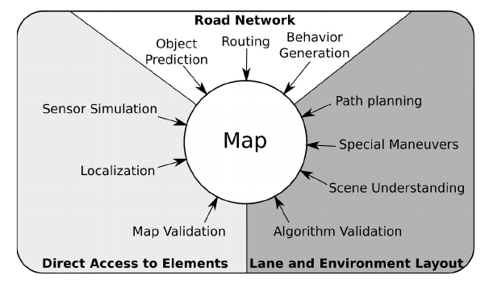

关键概念
Lanelet2是C++库(提供了python接口). Lanelet2 divides the world into a hierarchical structure of six different primitives: Points, linestrings, polygons, lanelets, areas and regulatory elements. lanelet2由六种基本元素（均继承Primitives基类meta-data）组成。每种元素都由唯一的ID号进行识别。
- Points Point是五种元素中唯一有位置信息的，而其他元素均直接或者间接地有Points构成（也就能依靠Points进行定位）
- linestrings linestrings主要用来表达地图中实体的的形状，也可以表示虚拟的东西（比如在交叉路口可能的行车路线)。linestrings具有方向（单向），linestrings是由一系列Points组成的有序数组。
- polygons polygon为多边形区域（一定封闭，即收尾相连）
- lanelets 代表车道或人行道、铁道（具有原子性）的基本单元，原子性表示的是在一个lanelets中相关的属性不会发生改变。由左右边线linestrings组成，相邻的两个lanelet共享交点。可以包含辅助中线（如果没有会自动计算）。lanelet具有方向。在regulatory elements指示的是lanelets末端适用的交通规则，而regulatory Attributes则对整个lanelets均适用。
- areas areas与lanelets类似，不过与之不同的是areas是一个没有方向的区域（人行道、停车场），具有多个进入点、多个出口点。areas包含了不可到达区域holes,
- regulatory elements 代表交通规则(比如路段限制速度、交通灯、停止线、交通信号等信息)，多条Lanelets可以共享regulatory elements,
- 图层 分为三个图层（三个层级的抽象层级越来越高）：
- 物理层：包含实际的道路实体映射的元素（包含点与线）
- 关联层：包含了物理层之间的关联关系（包含交通规则等）
- 拓扑层：关联元素的抽象表示
- 软件架构

lanelet2主要识别osm（地图上点的坐标为经度-维度，地图格式（OSM的离线编辑器JOSM））然后将其投影转换到UTM（by default UTM32N）格式地图（其单位是m）
- lanelet2 主要模块
- core(包含了前述的基本元素与不同的分层，还包含了中心线的生成、距离计算等基础计算)
- traffic rules
- physical(安全读取physical 中的元素信息)
- routring(生成基于交通规则的通路图)
- matching(道路特征匹配，用于定位;或者获取特定道路用户适用的交通规则)
- projection:（将地图上的全球坐标系转化为车辆的本地坐标系，还考虑了地球固定坐标系导致的大陆漂移因素），projection涉及到了从WSG84全球坐标系转换到UTM本地坐标系，更多不同坐标系概念参见几种坐标系及他们之间的投影
- IO：（读/写地图的接口）
- validity:(提供对地图中异常的检测)
- ROS（为ROS提供相关的接口）
- python(为python提供接口)
常用接口
map模块
//获取lanelet对应key-value属性
lanelet::Optional<double> velocity =map_->laneletLayer.get(path_id).attributes()["speed"].asDouble();
geometry模块
- 判断该点是否处于lanelet对象内
bool is_inside = lanelet::geometry::inside(lanelet, point)
//获取lanelet_path直到未变道前的后续路径
lanelet::LaneletSequence lane = path.getRemainingLane(path[count])routing模块
/* @brief: getRoute获取计算的是由起点lanelet到终点lanelet之间的最短路由lanelet
@param: 1st, 起点lanelet
@param: 2nd, 终点lanelet
@param: 3th, cost类型0为时间，1为距离
@param: 4th, 是否允许换道
@return, 其返回值为对应的lanelet集合
*/
lanelet::Optional<lanelet::routing::Route> route = routing_graph_->getRoute(map_->laneletLayer.get(start_ids[i]),map_->laneletLayer.get(end_ids[j]), 0 ,true);
//获取上步计算的最短路径，并不涉及计算
route->shortestPath()
//获取左侧相邻lanelet
auto left_neighbor=routing_graph_->left(current_lanelet);
//获取当前lanelet的后继lanelet(可能不止一个)
auto following_lanes=routing_graph_->following(current_lanelet);
//获取当前lanelet的前序lanelet(可能不止一个)
auto previous_lanelets=routing_graph_->previous(current_lanelet);practise
install
可以通过以下命令安装lanelet2.
sudo apt install ros-noetic-lanelet2
不过安装后似乎并不能直接运行example中的样例子. 于是尝试将代码git clone 到本地，然后再进行build(参见官方build教程) 然后运行以下命令
rosrun lanelet2_examples 01_dealing_with_lanelet_primitives
example中的例子均无任何输出，如果没有报错，说明整体环境已经设置完成，然后就可以进行进一步调试。 如果手上有自己的地图需要验证是否满足要求可以运行：
rosrun lanelet2_validation lanelet2_validate <yourmap>
如果没有报错，则说明地图无问题。
测试自己写的代码，在CMakelist中加入以下代码以包含头文件
cmake_minimum_required(VERSION 3.0)
project(foo)
find_package(lanelet2_core REQUIRED)
add_executable(foo_exe foo.cpp)
target_include_directories(foo_exe PUBLIC ${lanelet2_core_INCLUDE_DIRS})
target_link_libraries(foo_exe ${lanelet2_core_LIBRARIES})Lanelet2源码阅读
- lanelet中的元素顺序是以hashtable进行存储的
注意事项
- id是lanelet地图各元素的唯一表示当使用lanelet::utils::getId()生成新的元素时，会从所有元素最大id+1开始递增（避免在id重复）
- lineString的属性为dashed时，其相邻车道可以变道；type属性为solid时，相邻车道不可以变道（只有相邻车道共用lineString时才认为是相邻车道）
- lanelet的中线只有在第一次访问时才会计算并存储（可以事先遍历一遍，后续便只需要读取即可）